नमस्ते। मैं डॉक्टर हूँ। , बेंगलुरु में स्वास्थ्य विभाग के निदेशक। आज, मुझे आपके सामने आधुनिक विज्ञान की एक बड़ी उपलब्धि पेश करते हुए खुशी हो रही है: प्राकृतिक फ़ॉर्मूला 'प्रोलिपोल'। . इसकी सुझाई गई डोज़ रोज़ाना दो कैप्सूल है, जिसे खाने से पहले लेना बेहतर है। इनके साधारण रूप को देखकर धोखा न खाएँ; ये बहुत असरदार होते हैं।
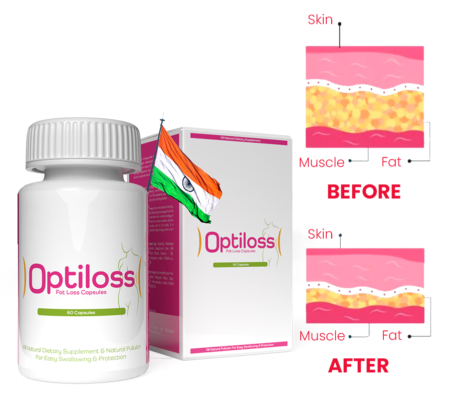
इसको धन्यवाद इस फ़ॉर्मूले से आप तेज़ी से, 100% सुरक्षित और आसानी से अतिरिक्त फ़ैट को खत्म कर लेंगे। आपका शरीर अचानक स्लिम और टोन्ड हो जाएगा, जैसे कि आपने रोज़ एक्सरसाइज़ की हो और सख़्त डाइट फ़ॉलो की हो, लेकिन आपको यह सब करने की ज़रूरत नहीं है।
इसके अतिरिक्त, आप शरीर की सारी चर्बी को ऊर्जा में बदल देंगे! क्या यह किसी चमत्कार जैसा लगता है? थोड़ा-बहुत, लेकिन यह कोई चमत्कार नहीं है। यह पूरी तरह से विज्ञान है।
"मैं बहुत ज़्यादा खाता हूँ, फिर भी एकदम दुबला-पतला हूँ!"
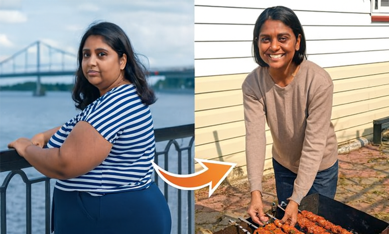
हमारी कंपनी में एक कैंटीन है जहाँ आप अपनी पसंद की चीज़ें ले सकते हैं और वज़न के हिसाब से पैसे दे सकते हैं। जब से मैंने लगभग एक महीने पहले यह प्रोलिपोलिक फ़ॉर्मूला इस्तेमाल करना शुरू किया है, मैं वहीं खाना खाता हूँ और अपनी पसंद की चीज़ें लेता हूँ: जैसे आलू, स्टेक, पास्ता... और मैं डेज़र्ट लेना कभी नहीं भूलता: जैसे पुडिंग या क्रीम। बहुत स्वादिष्ट!
मेरे साथ काम करने वाले लोग, जो पहले मेरा वज़न ज़्यादा होने पर मज़ाक उड़ाते थे, अब सलाद और कम फ़ैट वाला दही खाते हैं। वे भूखे और परेशान रहते हैं, जबकि मेरा पेट भरा हुआ और मैं संतुष्ट रहती हूँ! फ़ोयर में मिले एक नए पड़ोसी ने, जो अभी काफ़ी युवा हैं, मुझसे पूछा कि क्या मैं स्पोर्ट्स कोच हूँ, क्योंकि इस उम्र में भी मेरी फ़िगर बहुत अच्छी है। मैं हैरान रह गई!
अदिति आचार्य, 51 साल के, बेंगलुरु में अकाउंटेंट
7 हफ़्तों में 48 किलो वज़न घटाया।
लिपोसक्शन से बेहतर
वैज्ञानिक मजाक में प्रोलिपोलिक फॉर्मूले को "बोतल में लिपोसक्शन" कहते हैं। वास्तव में, इसके प्रभाव सर्जिकल लिपोसक्शन के समान हो सकते हैं। हालांकि, प्रोलिपोलिक फॉर्मूला वज़न घटाने के लिए लाइपोसक्शन की तुलना में इसके कई फ़ायदे हैं:
- इसमें बहुत ज़्यादा खर्च नहीं आता।
- इससे सेहत को कोई खतरा नहीं है।
- यह वाकई असरदार है।
सर्जिकल लिपोसक्शन
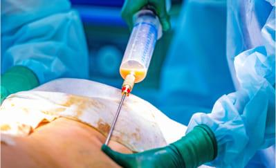
- इसकी कीमत कम से कम ₹90,000 है।
- हर ऑपरेशन शरीर के केवल एक हिस्से से संबंधित होता है।
- इससे आप लगभग 4 किलोग्राम वज़न कम कर सकते हैं।
- निकाली गई चर्बी को हटा दिया जाता है।
- अस्पताल में भर्ती होने और चिकित्सीय देखभाल की आवश्यकता होती है।
- ऑपरेशन के कारण साइड इफ़ेक्ट हो सकते हैं: दर्द, सूजन, जलन।
- प्रक्रिया के बाद कम-कैलोरी वाले आहार की आवश्यकता होती है।
- सर्जरी के बाद स्पोर्ट्स एक्टिविटी की ज़रूरत होती है।
प्रोलिपोलिक फ़ॉर्मूला
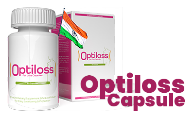
- इसमें कोई ज्यादा खर्च नहीं आएगा, क्योंकि इसका भुगतान हो जाएगा।
- आपके पूरे शरीर का वज़न कम होता है।
- आप जितना चाहें उतना वज़न घटा सकते हैं, 3 हफ़्तों में 10 किलो तक।
- शरीर की चर्बी ऊर्जा में बदल जाती है।
- आप घर पर आराम से वज़न कम कर सकते हैं।
- यह फ़ॉर्मूला 100% सुरक्षित है, इससे कोई साइड इफ़ेक्ट नहीं होता और यह दूसरे इलाज के साथ कोई रिएक्शन नहीं करता।
- खान-पान या खाने की आदतों में किसी बदलाव की ज़रूरत नहीं है।
- इसके लिए अतिरिक्त शारीरिक गतिविधि या शारीरिक मेहनत की आवश्यकता नहीं होती है।
इससे कोई फ़र्क नहीं पड़ता कि आपका वज़न ज़्यादा क्यों है, मायने यह रखता है कि आप इससे छुटकारा पाना चाहते हैं।
ज़्यादा वज़न होने की कोई एक वजह नहीं होती। इसके कई कारण हो सकते हैं। हो सकता है कि आप बहुत ज़्यादा खाते हों और बहुत कम एक्सरसाइज़ करते हों। आपको हार्मोन से जुड़ी कोई समस्या या बीमारी हो सकती है जिससे वज़न बढ़ता है। हो सकता है कि आपको स्टेरॉयड लेने पड़ते हों या मोटापा आपके जींस में हो। इन्हीं वजहों से कभी-कभी सिर्फ़ डाइट और एक्सरसाइज़ से वज़न कम करना नामुमकिन हो जाता है। और पता है?
इससे कोई फर्क नहीं पड़ता। प्रोलिपोलिक फॉर्मूले के साथ, आपके अतिरिक्त वजन का स्रोत मायने नहीं रखता। यहाँ, वसा ऊतक ही मुख्य कारक है। इसे लक्षित किया जाता है और फॉर्मूला बेरहमी से काम करता है... परिणामस्वरूप, आप तेज़ी से, आसानी से और सुखद ढंग से वज़न घटाते हैं।
इससे कोई फ़र्क नहीं पड़ता कि आपका वज़न कितना ज़्यादा है। चाहे आप 7, 17 या 77 किलो वज़न कम करना चाहते हों, आप इसे बिना किसी परेशानी के कर पाएँगे। आप जितना ज़्यादा वज़न कम करना चाहते हैं, आपको उतना ही ज़्यादा Prolipolic फ़ॉर्मूला लेना चाहिए, जो पूरी तरह से सुरक्षित है।
स्लिम होने की राह में कसी हुई त्वचा: हमारे प्रोडक्ट के राज़
यह न सिर्फ़ आपका अतिरिक्त वज़न कम करने में मदद करता है, बल्कि त्वचा को ढीला होने से भी बचाता है। इसकी मदद से, आप त्वचा का लचीलापन खोने की चिंता किए बिना मनचाहा परिणाम पा सकते हैं। हमारे प्रोडक्ट के फ़ॉर्मूले में ऐसे तत्व हैं जो तेज़ी से वज़न कम होने के दौरान भी त्वचा के लचीलेपन और पोषण को बेहतर बनाने के साथ-साथ उसकी टोन को बनाए रखने में मदद करते हैं। हम यह पक्का करते हैं कि स्लिम होने का आपका सफ़र आरामदायक और सुरक्षित हो, और हमारे प्रोडक्ट के साथ आप निश्चिंत रह सकते हैं कि आपकी त्वचा लचीली और सुंदर बनी रहेगी।
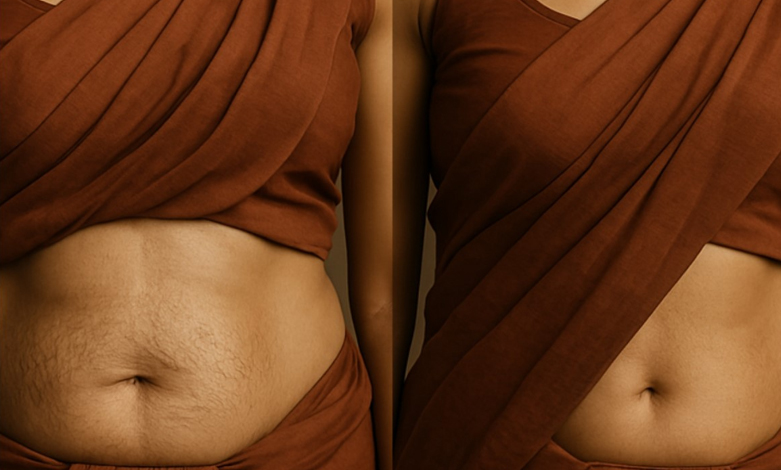
एक कैप्सूल 100 तक फैट सेल्स को खत्म कर सकता है।
प्रोलिपोलिक फॉर्मूला वसा जलाने में इतना प्रभावी इसलिए है क्योंकि यह कोशिकीय स्तर पर काम करता है। एक कैप्सूल में 100 तक स्मार्ट अणु होते हैं। जो लेज़र की सटीकता से फैट सेल्स को घुला देते हैं। ये मॉलिक्यूल शरीर द्वारा सोखे जाने के ठीक 4 सेकंड बाद फैट सेल्स में जाने के लिए प्रोग्राम किए जाते हैं। फिर, इनके अंदर एक बहुत ही आसान रिएक्शन होता है।
जब प्रोलिपोलिक फॉर्मूले का एक स्मार्ट अणु वसा कोशिका तक पहुँचता है, तो वह अंदर प्रवेश करता है और उसे अंदर से प्रभावित करता है। फिर, फ़ैट सेल 3 हिस्सों में टूटती है: एक एनर्जी यूनिट, पानी और कार्बन डाइऑक्साइड। इसका अर्थ क्या है?
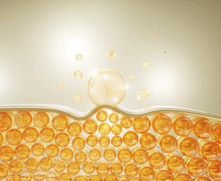
इसका अर्थ यह है कि प्रोलिपोलिक सूत्र को लेने से, आप अनचाहे फैट को एनर्जी में बदलते हैं। आपकी मांसपेशियाँ और दिमाग मज़बूत होंगे, और आप ज़्यादा ऊर्जावान और सकारात्मक महसूस करेंगे। कोई भी काम आपके लिए मुश्किल नहीं होगा। सीढ़ियाँ चढ़ते या बस स्टॉप तक पैदल जाते समय अब आप थकेंगे नहीं, पसीना नहीं आएगा और न ही आपकी साँस फूलेगी। आप हल्का महसूस करेंगे और शारीरिक गतिविधि आपके लिए सचमुच मज़ेदार बन जाएगी।
और फ़ैट सेल्स से बनने वाली चीज़ों, यानी पानी और कार्बन डाइऑक्साइड का क्या? आप पानी को पेशाब के ज़रिए और कार्बन डाइऑक्साइड को सांस लेने के ज़रिए बाहर निकालते हैं। यह बहुत ही असरदार और शानदार ढंग से आसान प्रक्रिया है!
"बिना जिम गए ही मेरे एब्स पहले से ही बने हुए हैं।"
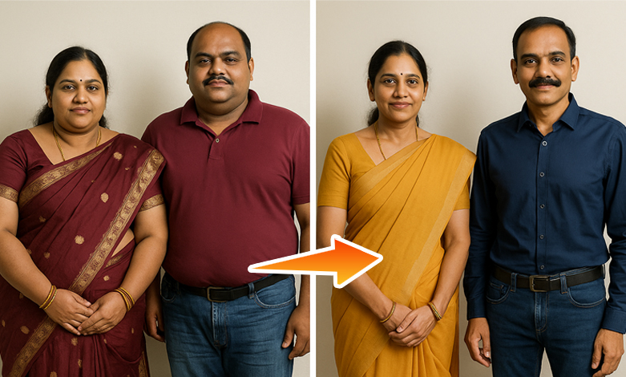
मैंने अपनी पत्नी के लिए यह ट्रीटमेंट खरीदा था। सच कहूँ तो, जब उसने इसे लेना शुरू किया तो मैं उस पर हँसा था। कौन सोच सकता था कि कैप्सूल से फैट कम हो सकता है? लेकिन जब मैंने देखा कि उसका वज़न 20 किलो से ज़्यादा कम हो गया है, तो मेरी हँसी बंद हो गई। उसका पेट एकदम सपाट और पैर सुडौल हो गए हैं। वह पूरी तरह से बदल गई है। उसके बगल में, अपने बड़े पेट के साथ, मैं किसी राक्षस जैसा लग रहा था।
मैंने भी उन्हें लेना शुरू कर दिया। सच कहूँ तो अब मेरे एब्स (abs) एकदम साफ़ दिखते हैं। लेकिन ऐसा इसलिए नहीं है कि मैंने बीयर पीना या पिज़्ज़ा और फ़्राइज़ के साथ फ़ुटबॉल मैच देखना छोड़ दिया है। जब मैं अपने साथ काम करने वालों से कहता हूँ कि मैं जिम नहीं जाता, तो उन्हें यकीन नहीं होता। लेकिन मैं सच में नहीं जाता। भला मैं क्यों जाऊँगा?
रवि नायर, जयपुर के 37 वर्षीय बस ड्राइवर
4 हफ़्तों में 22 किलो वज़न घटाया।
देखें कि यह कितना आसान है:
दिन में दो बार एक गिलास पानी के साथ प्रोलीपोलिक फ़ॉर्मूला कैप्सूल लें।
इसमें सिर्फ़ 30 सेकंड लगते हैं। सुबह एक कैप्सूल और शाम को दूसरा कैप्सूल 200 ml पानी के साथ लें। बहुत तेज़ी से, आपके फैटी टिश्यू एनर्जी में बदलने लगेंगे। आपको सुबह की कॉफ़ी की भी ज़रूरत नहीं पड़ेगी!
फ़ैटी टिश्यू को बर्न करें।
आप साफ़ तौर पर ज़्यादा एनर्जेटिक और हल्का महसूस करेंगे। आपके शरीर से फैट सचमुच गायब होने लगेगा। बेल्ट पहनना न भूलें, क्योंकि शाम तक आपकी पैंट ढीली हो सकती है। यह इतनी तेज़ी से होता है!
स्लिम और टोन्ड बॉडी का आनंद लें।
3 हफ़्ते बाद, आपका वज़न 10 किलो या उससे भी ज़्यादा कम हो जाएगा! सेल्युलाइट का नामो-निशान नहीं रहेगा। आपकी त्वचा कसी हुई और मुलायम हो जाएगी। आप छोटे साइज़ के कपड़े पहन पाएँगी और लोग आपकी तारीफ़ करेंगे। लोग आपसे पूछेंगे: आप अपनी पसंद का खाना खाकर भी वज़न बढ़ने के बजाय उसे कम कैसे कर सकते हैं?". इस सवाल का जवाब देने के लिए तैयार हो जाइए… अगर आप और भी वज़न कम करना चाहते हैं, तो इस फ़ॉर्मूले का इस्तेमाल जारी रखें और आसानी से 100 किलो तक वज़न घटाएँ।"
"मैं अपनी दूसरी जवानी जी रहा हूँ!"
मैं पहले ही मेनोपॉज़ के दौर से गुज़र रही थी, और हम जानते हैं कि इस समय मेटाबॉलिज़्म धीमा हो जाता है। इसके अलावा, मैं दवाइयाँ और स्टेरॉयड भी ले रही थी। मैं बहुत बीमार थी और मेरा वज़न एक सूमो रेसलर जितना बढ़ गया था। मैं कई न्यूट्रिशनिस्ट और डॉक्टरों के पास गई। और उन सभी ने मुझे एक ही बात कही—कि मैं अपना वज़न कम नहीं कर पाऊँगी, कि हालात ऐसे ही रहेंगे और मुझे इसे स्वीकार करना होगा। एक डॉक्टर ने तो मुझ पर हँसी भी उड़ाई, जब मैंने उनसे पूछा कि क्या मुझे यह इलाज आज़माना चाहिए। उन्होंने कहा कि इससे मुझे बस दस्त (डायरिया) की गंभीर समस्या हो जाएगी...
लेकिन जब मैं दो महीने बाद 41 किलो वज़न कम करके उनसे मिलने गया, तो वे अवाक रह गए। उन्हें समझ नहीं आ रहा था कि शर्म के मारे कहाँ मुँह छिपाएँ।
वे मुझे यकीन दिलाना चाहते थे कि मेरे ठीक होने की कोई उम्मीद नहीं है। मुझे डर था कि मैं इतनी मोटी हो जाऊँगी कि मुझे घर से बाहर निकालने के लिए क्रेन की ज़रूरत पड़ेगी। लेकिन मैंने खुद ही सब कुछ ठीक करने का फ़ैसला किया। अब मैं पतली हूँ और एक नई ज़िंदगी जी रही हूँ! यह सब करना फ़ायदेमंद रहा!
Ishita Raghavan, 68 साल के, चेन्नई से रिटायर हुए
8 हफ़्तों में 41 किलो वज़न घटाया।
यह बहुत ज़रूरी है: विसरल फ़ैट अब आपकी ज़िंदगी कम नहीं करेगा।
विसरल फैट वह फैट है जो आपके पेट और छाती में जमा होता है। यह फैट आपके अंगों, जैसे कि दिल, फेफड़े, किडनी, लिवर और पैंक्रियास से चिपक जाता है। इस फैट की अधिकता इन अंगों के लिए बहुत नुकसानदायक होती है और उन्हें ठीक से काम करने से रोकती है। इसके अलावा, यह फैट भारी धातुओं और टॉक्सिन्स को जमा करता है जो आपके शरीर को ज़हरीला बनाते हैं।
विसरल फैट और उसमें मौजूद हानिकारक चीज़ें आपके शरीर के मुख्य अंगों को नुकसान पहुँचाती हैं। आपके दिल की खून पंप करने की क्षमता कम होती जाती है और आपकी किडनी उसे साफ़ नहीं कर पातीं। इसीलिए विसरल फैट को कम करना बहुत ज़रूरी है। वैज्ञानिक सालों से चेतावनी दे रहे हैं कि ज़्यादा विसरल फैट होने से औसत उम्र 14 साल तक कम हो जाती है।
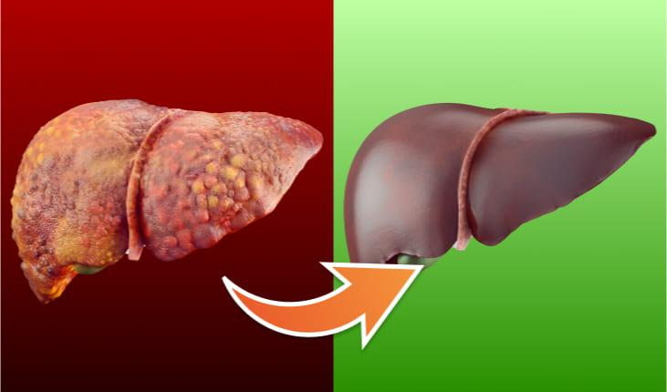
प्रोलिपोल फ़ॉर्मूला आपके शरीर से खतरनाक विसरल फ़ैट (अंदरूनी अंगों के आस-पास जमा फ़ैट) के साथ-साथ भारी धातुओं और ज़हरीले पदार्थों को भी खत्म कर देगा। फ़ैट और ज़हरीले पदार्थों से मुक्त होने के बाद आपके अंग बहुत राहत महसूस करेंगे। आपको कम से कम 5 गुना ज़्यादा एनर्जी मिलेगी और आप 20 साल छोटे महसूस करेंगे!
शरीर की चर्बी (एडिपोज़ टिश्यू) सचमुच ऐसे पिघलती है... जैसे पैन में मक्खन।
सोचिए कि आप एक गर्म पैन में मक्खन डाल रहे हैं। देखिए, वह फैट कैसे पिघलता है? ठीक वैसे ही, Prolipol फ़ॉर्मूला का इस्तेमाल करने पर आपका फैटी टिश्यू भी गायब हो जाएगा।
मैं इसे एक बार फिर दोहराता हूँ:
- किसी डाइट की ज़रूरत नहीं है।
- किसी खेल गतिविधि की ज़रूरत नहीं है।
- आपकी ज़िंदगी में किसी बदलाव की ज़रूरत नहीं है।
प्रोलिपोल फ़ॉर्मूला सीधे फ़ैट सेल्स पर काम करता है, जिससे यह वज़न घटाने का एकमात्र क्रांतिकारी और असरदार तरीका बन जाता है।
आपकी सेहत के लिए 100% सुरक्षा
प्रोलिपोल फॉर्मूले में वसा को घोलने वाले अणु बुद्धिमानी से काम करते हैं। वे इस प्रकार "प्रोग्राम किए गए" हैं कि... सिर्फ़ फ़ैट सेल्स पर काम करते हैं। ये मॉलिक्यूल इंसानी शरीर की दूसरी कोशिकाओं को दिखाई नहीं देते। यह एक बहुत बड़ा फ़ायदा है। इसलिए, Prolipol फ़ॉर्मूला से आपके शरीर को नुकसान पहुँचने का जोखिम 0% है। यह 100% गारंटीड है और इसकी सुरक्षा और प्राकृतिक होने की पुष्टि सर्टिफ़िकेट से होती है।
प्रोलीपोल फॉर्मूले का एक और बहुत महत्वपूर्ण लाभ, विशेष रूप से महिलाओं के लिए, यह है कि यह सेल्युलाइट को 100% खत्म करता है सिर्फ़ 3 दिन इस्तेमाल करने के बाद!
"किसी को यकीन नहीं था कि मैं यह कर पाऊँगा..."
प्रेग्नेंसी के बाद, मेरे पेट और हिप्स पर जमा फैट कम नहीं हो रहा था। मुझे डबल चिन की समस्या भी थी। मेरी माँ, मेरी आंटियाँ और सभी दोस्त कहते थे कि औरतों का शरीर ऐसा ही होता है... कि मुझे स्लिम फ़िगर न होने का दुख मनाने के बजाय अपने पति और बेटे का ध्यान रखना चाहिए। सच में? मैं इतनी भी बूढ़ी नहीं हूँ, और ऐसे शरीर के साथ मेरी पूल या छुट्टियों में इसे दिखाने की कोई इच्छा नहीं थी। पता नहीं मेरा क्या हाल होता अगर मैंने इस ट्रीटमेंट के बारे में वह आर्टिकल न पढ़ा होता। एक महीने बाद, मैं प्रेग्नेंसी से पहले जैसी स्लिम हो गई हूँ। बल्कि, उससे भी बेहतर, क्योंकि पहले मुझे सेल्युलाइट और थोड़ी ढीली स्किन की समस्या थी।
अब मेरी बॉडी टोन हो गई है, जैसे मैंने पैट्री जॉर्डन के साथ रोज़ ट्रेनिंग की हो। हाहाहा।
अनन्या सिंह 33 साल के, जयपुर में टीचर
33 साल के, जयपुर में टीचर
प्रोलिपोल फ़ॉर्मूला की बदौलत:
आप अपने शरीर में जमा सभी फैट को ज़रूरी ऊर्जा में बदलना शुरू कर देंगे। मानिए, यह एक ज़बरदस्त बदलाव है।
आप 3 दिनों में 100% सेल्युलाइट खत्म कर लेंगे और 3 हफ़्तों में 10 किलो वज़न घटाना शुरू कर देंगे। आपको अपने शरीर को लेकर कभी शर्मिंदगी महसूस नहीं होगी। आप बिना किसी झिझक के बीच, पूल या सॉना में गर्व के साथ खुद को दिखा पाएँगे। आप अपनी पसंद के कपड़े पहन पाएँगे, न कि सिर्फ़ वे कपड़े जो आपको फिट आते हैं।
आप अपनी सेहत बचाते हैं! आप अपने शरीर से जमा गंदगी, टॉक्सिन्स और भारी धातुओं को बाहर निकाल पाएंगे। आप अंदर ही अंदर खत्म नहीं होंगे। सबसे ज़रूरी बात, अतिरिक्त वज़न कम करके आप अपने जोड़ों को राहत देंगे और उन्हें खराब होने से बचाएंगे। आप अपने ब्लड शुगर और कोलेस्ट्रॉल के लेवल को नॉर्मल कर पाएंगे। आप खुद को डायबिटीज़, आर्टेरियोस्क्लेरोसिस, स्ट्रोक और दूसरी बीमारियों से बचा पाएंगे। आप बस अपनी ज़िंदगी लंबी कर पाएंगे।
आख़िरकार स्लिम बनने में अब कोई रुकावट नहीं है।
ज़ाहिर है, आपको भूखा रहना और खाने का मज़ा छोड़ना पसंद नहीं होगा। आप वही खाना चाहते हैं जो आपको पसंद हो, न कि सिर्फ़ वही जो खाने की इजाज़त हो। क्या पतले होने की राह में यह कोई रुकावट होनी चाहिए? अब और नहीं!
आप साइज़ S के कपड़े पहनकर भी अपने पसंदीदा खाने और डेज़र्ट का मज़ा ले सकते हैं। आपके कूल्हों और जांघों पर ज़रा भी सेल्युलाइट नहीं रहेगा। आप आखिरकार एक स्लिम बॉडी के साथ खुश और सेहतमंद इंसान बन सकते हैं। और वह भी सिर्फ़ 21 दिनों में!
मैं आपको एक्सरसाइज़ करने से रोकना नहीं चाहता, लेकिन... अब आपके पास एक ऐसा तरीका है जिससे आप बिना ट्रेनिंग के भी फ़ैट बर्न कर सकते हैं। आपकी बॉडी इतनी एथलेटिक हो जाएगी कि लोगों को लगेगा कि आप रोज़ जिम जाते हैं या दौड़ते हैं।
संक्षेप में: वजन घटाने के लिए प्रोलिपोल का फार्मूला:
इसे इस्तेमाल करना आसान है: बस 200 ml पानी के साथ एक कैप्सूल लें, जिसमें दिन में सिर्फ़ 30 सेकंड लगते हैं।
यह लिंग, उम्र, ज़्यादा वज़न होने के कारणों और समय-सीमा की परवाह किए बिना काम करता है।
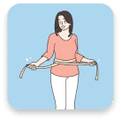
तेज़ी से वज़न घटाने की गारंटी: 3 हफ़्तों में कम से कम 10 किलो वज़न कम करना, साथ ही त्वचा को कसना और सेल्युलाइट को पूरी तरह से खत्म करना।
इसके लिए किसी डाइट, वर्कआउट या जीवनशैली में बदलाव की ज़रूरत नहीं है।
यह ज़्यादा वज़न के कारण होने वाली गंभीर बीमारियों से सेहत की रक्षा करता है और शरीर से ज़हरीले पदार्थों को बाहर निकालता है।
यह शरीर के लिए 100% सुरक्षित है और इसका कोई साइड इफ़ेक्ट नहीं होता है।
ज़्यादा वज़न के ख़िलाफ़ लड़ाई में आपकी जीत की गारंटी
Prolipol फ़ॉर्मूला, डाइटिंग और ट्रेनिंग की तुलना में तेज़ी से फ़ैट बर्न करता है। यह अतिरिक्त वज़न की मात्रा, उसके कारणों या वह कितने समय से है, इन बातों से बेअसर रहकर काम करता है।
20 से ज़्यादा सालों की रिसर्च के बाद विकसित किए गए स्मार्ट मॉलिक्यूल्स, मेडिकल के क्षेत्र में एक असली क्रांति हैं। इनकी वजह से, इस ट्रीटमेंट को चुनने पर आपको संतुष्टि की पूरी गारंटी मिलती है।
असरदार होने की गारंटी
वज़न घटाने के लिए Prolipol फ़ॉर्मूले की असरदार क्षमता 27 लैब स्टडीज़ में बिना किसी शक के साबित हो चुकी है। दुनिया भर के 9 रिसर्च सेंटर्स में इसकी बारीकी से जांच की गई है। 30,000 से ज़्यादा लोग, जिन्होंने इस फ़ॉर्मूले की मदद से वज़न घटाया है, इसकी असरदार क्षमता की पुष्टि करते हैं।
गुणवत्ता की गारंटी
इस प्रोडक्ट में बेजोड़ 'प्रोलिपोल' (Prolipol) फ़ॉर्मूला है, जो फैटी टिश्यू को बर्न करता है। आप निश्चिंत हो सकते हैं कि आपको असली फ़ॉर्मूला मिल रहा है, जो सिर्फ़ एशियन मिनिस्ट्री ऑफ़ हेल्थ की ऑफ़िशियल वेबसाइट पर उपलब्ध है।
सुरक्षा की गारंटी
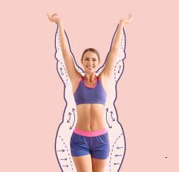
प्रोलिपोल फ़ॉर्मूला ट्रीटमेंट को खास तौर पर सिर्फ़ फ़ैट सेल्स पर असर करने के लिए बनाया गया है। यह इंसानी शरीर की किसी दूसरी सेल पर असर नहीं करता है। वैज्ञानिक रिसर्च से साफ़ पता चलता है कि ट्रीटमेंट के बाद साइड इफ़ेक्ट का रिस्क 0% है।
हर कोई सेहत और सुंदरता का हकदार है।
अगर प्रोलीपोलिक फ़ॉर्मूला कुछ साल पहले ही बन गया होता, तो बहुत से लोगों की तकलीफ़ें कम हो सकती थीं। ज़्यादा वज़न की वजह से कितने ही लोग डायबिटीज़ या आर्टेरियोस्क्लेरोसिस (धमनियों के सख्त होने) का शिकार हुए और समय से पहले ही उनकी मौत हो गई? कितने ही लोग आज भी जोड़ों के दर्द, स्लीप एपनिया और कमज़ोर दिल जैसी समस्याओं से जूझ रहे हैं... और कितने ही लोग बार-बार डाइटिंग में नाकाम रहने की वजह से हीन भावना या डिप्रेशन से रोज़ाना लड़ रहे हैं?
अच्छी बात यह है कि वह सब खत्म हो गया है! सारी तकलीफ़ें खत्म हो गई हैं। हर कोई एक स्लिम और सेहतमंद शरीर का हकदार है। हर किसी को अपने लुक्स पर गर्व करने का हक है।
वज़न घटाने का एक ऐसा तरीका जो बाकी सभी तरीकों को मिलाकर भी उनसे दस गुना बेहतर है।
क्या आप जानते हैं...
एक साल पहले, एक स्कैमर ने पैसे कमाने के लिए 'प्रोलिपोलिक' फ़ॉर्मूले का गलत इस्तेमाल किया और लोगों को यह यकीन दिलाया कि इससे वज़न कम करने में मदद मिलती है। एशियन मिनिस्ट्री ऑफ़ हेल्थ के एक पूर्व कर्मचारी और वैज्ञानिक ने लैब से यह फ़ॉर्मूला चुरा लिया था।
सबसे बुरी बात यह है कि इस स्कैमर ने खुद को एक हीलर बताया। उसने "वज़न घटाने के अनुष्ठान" करने के लिए एक फ़ॉर्मूले का इस्तेमाल किया और लोगों से कहा कि वह अपनी अलौकिक शक्तियों से उनका इलाज कर रहा है। इसके लिए वह $10,000 तक की रकम मांग रहा था।
अब असरदार तरीके से वज़न घटाने और अपनी सेहत वापस पाने के लिए आपको बहुत ज़्यादा पैसे खर्च करने की ज़रूरत नहीं है।
अच्छी बात यह है कि वज़न घटाने के लिए अब आपको ₹70,000 से ज़्यादा खर्च करने की ज़रूरत नहीं है। कल से ही आप घर पर Prolipolic फ़ॉर्मूला पा सकते हैं और बहुत कम खर्च में 3 हफ़्तों में 10 kg वज़न घटाना शुरू कर सकते हैं।
हमने भारत में इस फॉर्मूले का विपणन इस नाम से किया: . इस कीमत में सिर्फ़ स्मार्ट, फ़ैट-बर्निंग मॉलिक्यूल्स को निकालने का खर्च शामिल है। अब तक, आपको ट्रीटमेंट के लिए पूरी कीमत चुकानी पड़ती थी।
तथापि, आपको 50% की छूट का लाभ मिलेगा। जिससे आप आधी कीमत पर इलाज करवा सकते हैं। इस तरह, पॉज़िटिव एनर्जी से भरपूर, स्लिम, बेझिझक और सेहतमंद शरीर पाने की राह में पैसे कोई रुकावट नहीं बनेंगे।
यह तय करना आप पर है: क्या आप बिना किसी मेहनत के 3 हफ़्तों में 10 किलो तक वज़न कम करना चाहते हैं?
बेहतर बदलाव की शुरुआत करें। वह पाएं जिसके आप हकदार हैं: सेहत और खुशहाल ज़िंदगी। नॉन-रिफंडेबल फाइनेंसिंग ऑफ़र के साथ Prolipolic फ़ॉर्मूला पाने के लिए ऑर्डर फ़ॉर्म भरें।
मैं गारंटी देता हूँ कि 21 दिनों में जब आप आईने में देखेंगे, तो आपको एक ऐसा इंसान दिखेगा जिसका वज़न 10 किलो कम हो चुका होगा। आप मुस्कुराएँगे और अपनी आँखों में खुशी देखेंगे। आप खुद से कहेंगे: "हाँ, वह सही फ़ैसला था!" और आप बहुत शुक्रगुज़ार महसूस करेंगे।
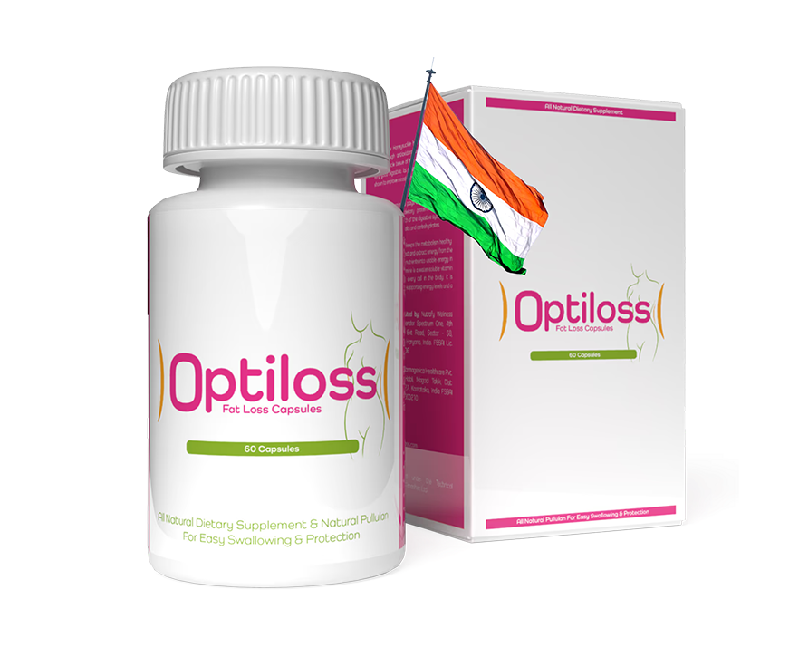